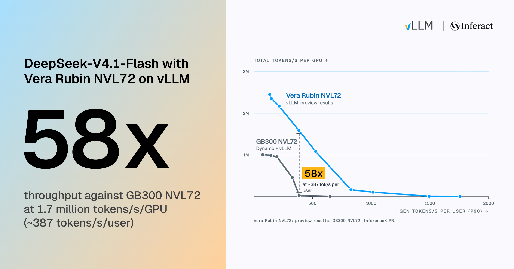
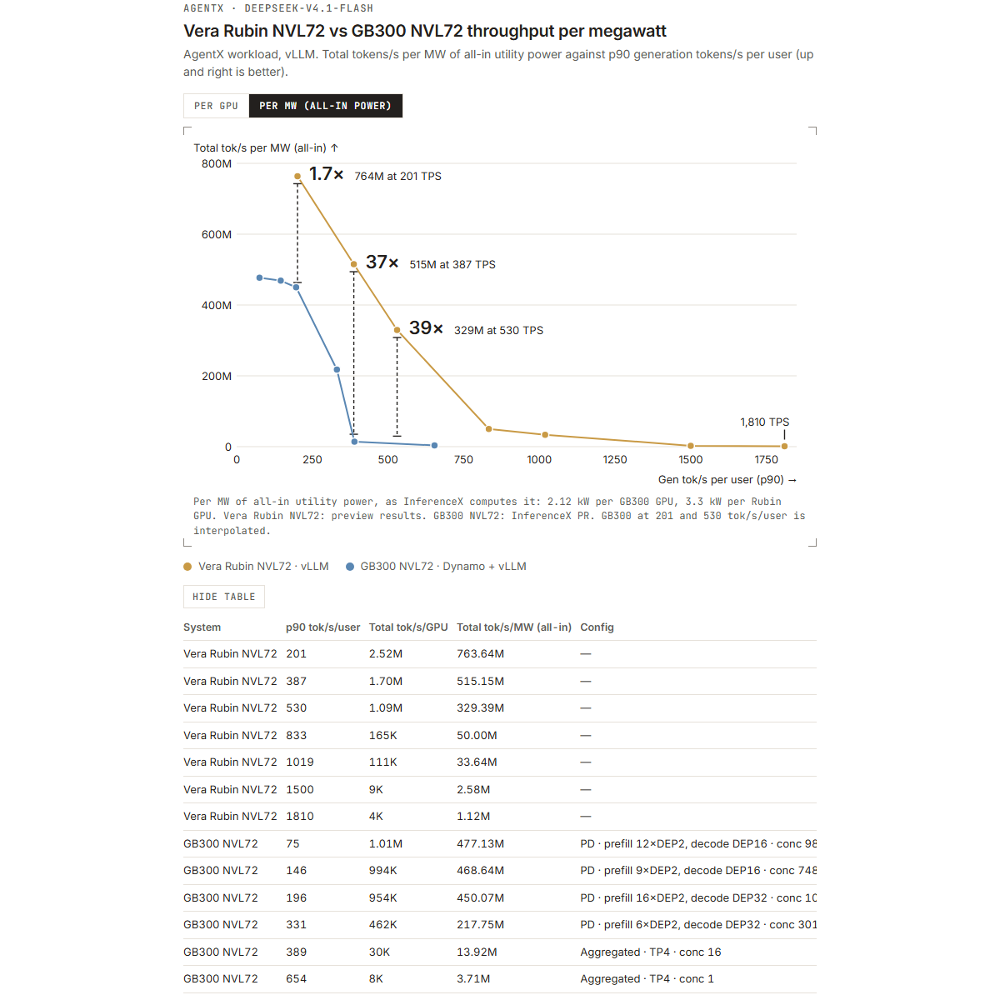
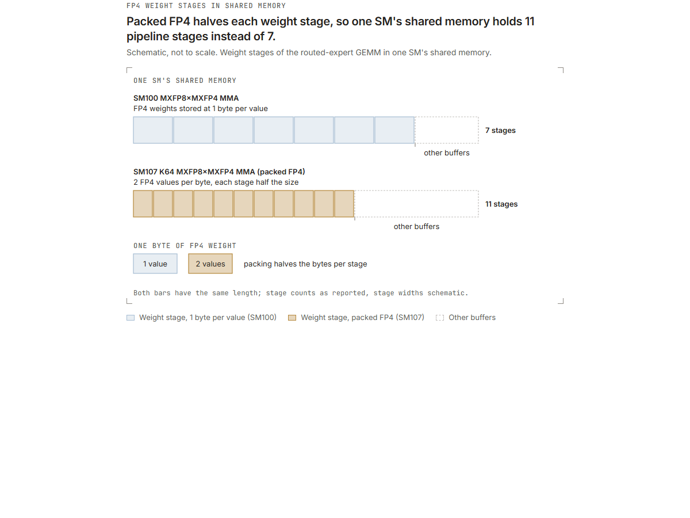
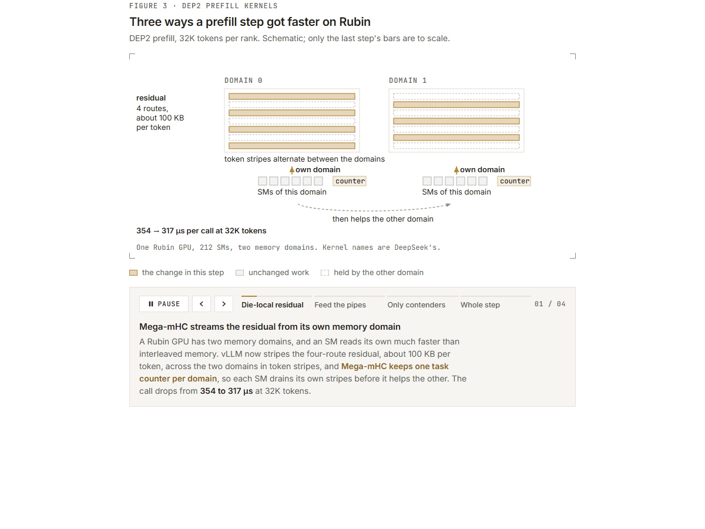
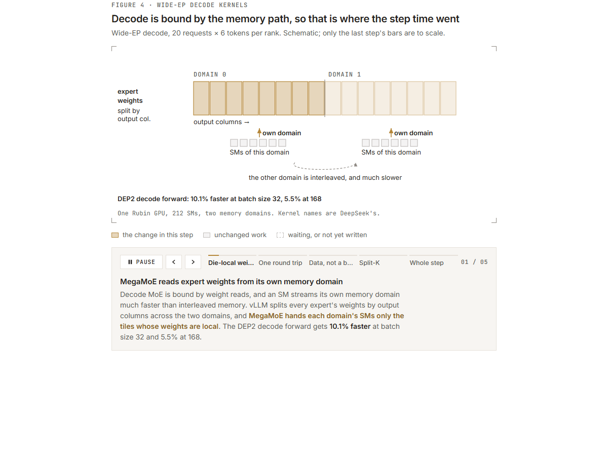
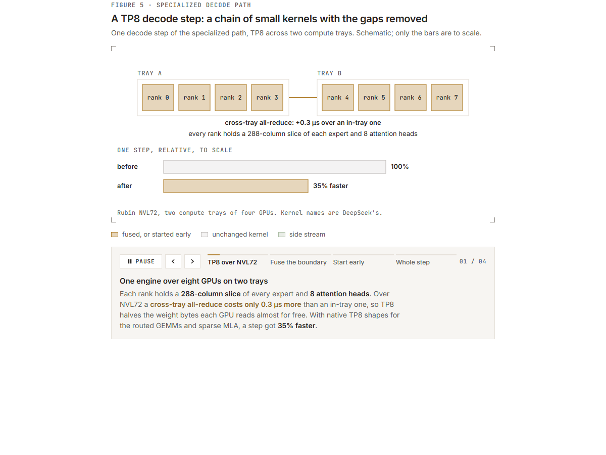
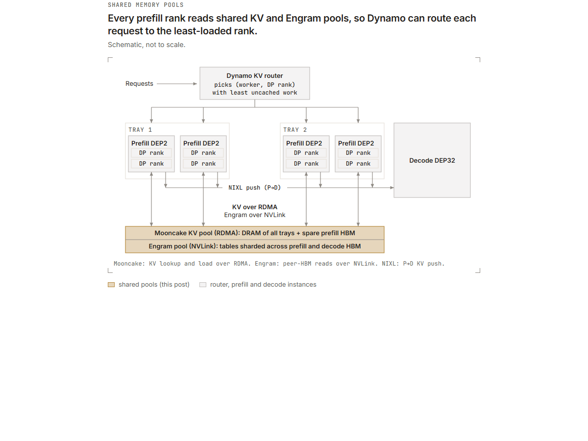
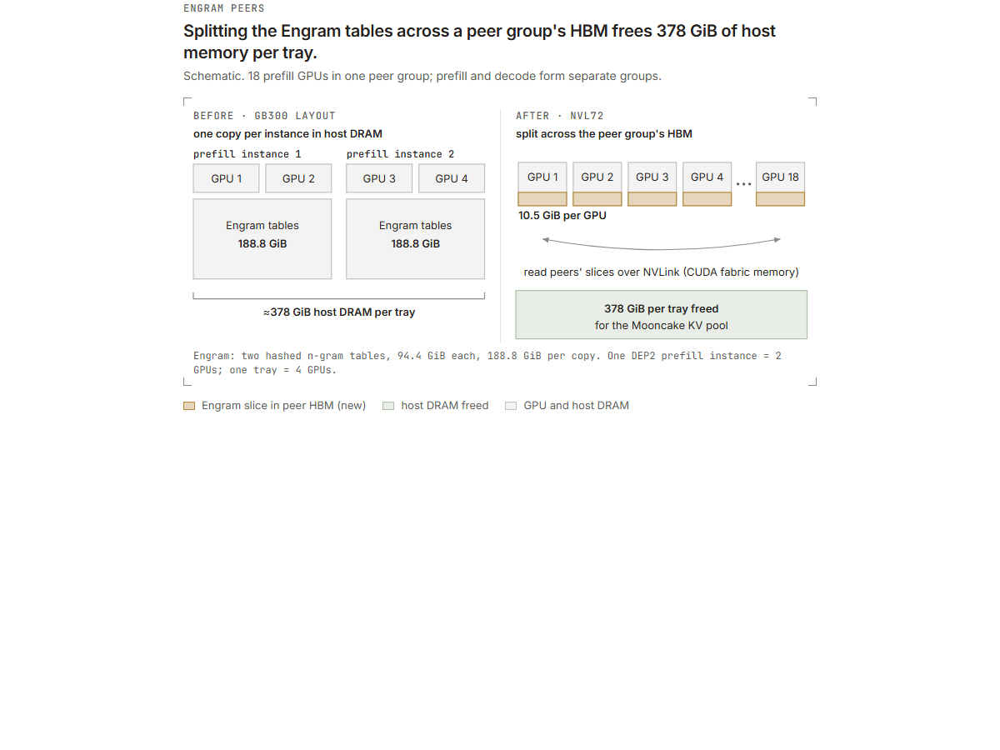
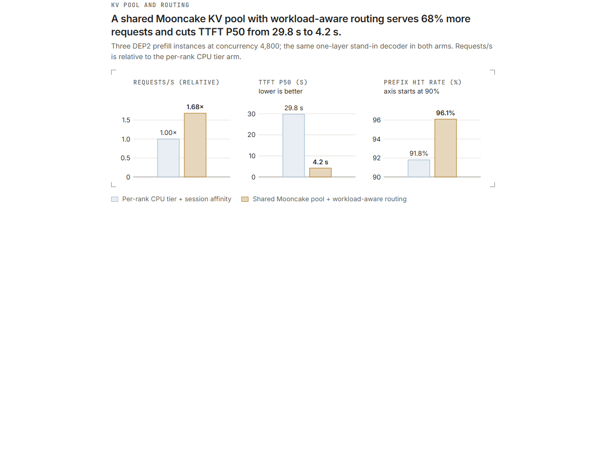

Vera Rubin NVL72 上的 DeepSeek-V4.1-Flash：单用户 387 token/s 时吞吐比 GB300 NVL72 高 58 倍

要点速览： 在一套 NVIDIA Vera Rubin NVL72 机架上，vLLM 以每 GPU 170 万 token/s 的速度服务 DeepSeek-V4.1-Flash，同时每位用户获得 387 token/s，吞吐为 GB300 NVL72 的 58 倍；峰值吞吐达到 252 万 token/s，单用户速度达到 1,810 token/s。这些提升来自针对 Rubin 分离式内存与 FP4 Tensor Core 调优的内核、面向低延迟的专用解码内核，以及通过 NVLink 共享的机架级 KV 缓存和 Engram 表。
这是 DeepSeek-V4.1-Flash 系列的第三篇文章。第一篇介绍首日适配和内核融合；第二篇使用 P/D 分离和 Wide-EP 将模型扩展到 GB300 NVL72 机架。本文把同一套软件栈迁移到上月介绍的 Vera Rubin NVL72。
Rubin 提供了新的优化空间。本文先介绍影响设计的硬件特性，再说明四组优化：
- 面向 DEP 预填充和解码的 Rubin 优化内核。[^terms] 我们为 Rubin 重做了 MoE、注意力、GEMM、mHC 和 indexer 内核：受带宽限制的数据留在每个 SM 自己的内存域；SM107 更宽的 MMA 指令每次发射完成更多工作；内核会在等待前先启动加载及其依赖。DEP2 预填充步骤约快 28%，DEP 解码步骤约快 25%。
- 追求最低延迟的专用 TP 解码路径。 通过跨算子融合、计算与通信重叠和调优，再以 TP8 把模型分布到两个计算托盘，batch 1 时达到 P90 1,810 token/s。
- Dynamo 工作负载感知路由与机架级内存池。 Rubin 的速度带来更高并发，因此我们将整机架内存池化：Mooncake KV 池从 DRAM 扩展到空闲 HBM，Engram 表跨 GPU HBM 分片。即便在极高并发下，前缀命中率仍保持 96.5%–97%，仅靠路由即可平衡各 rank。
性能概览

图 1：NVIDIA Vera Rubin NVL72（vLLM、P/D 分离、Wide-EP）与 GB300 NVL72 上的 SemiAnalysis AgentX。吞吐统计缓存输入、未缓存输入和输出 token（GB300 数据源）。
我们沿用前文方法，以 SemiAnalysis AgentX 作为有代表性的智能体服务工作负载。图 1 的两个标签页分别比较两套机架的原始吞吐（每 GPU 每秒总 token 数，包括输入、缓存输入和输出）以及按功耗归一化的吞吐。
测量方法
方法与此前的 GB300 文章一致。内核和模型前向分析使用 vllm bench forward，通过真实 execute_model 路径、真实权重和真实 AgentX token 对精确的预填充与解码 batch 计时。预填充内核 A/B 测试会循环运行数秒；存在差异时报告持续性能。
从 DeepSeek-V4.1-Flash 视角看 Rubin
Vera Rubin NVL72 的三个特性决定了下面的大多数设计。每项 Rubin 专用优化都会指出它依赖的特性。
- 每张 GPU 有两个内存域。 SM 读取自身域的速度远高于交错内存，读取另一域更慢。正如 Rubin 预览所示，这对带宽受限数据非常重要，包括 MoE 权重、LM head、MegaMoE combine buffer 和 mHC 残差流。
- SM107 新增更宽的块缩放 MMA 指令。 MegaMoE 和低延迟路由 GEMM 使用新的 K64 混合精度（FP8×FP4）MMA，每条指令完成两倍工作。每 rank 8K 以上 token 时，MegaMoE 吞吐提高 8%–11%；低 batch 路由 GEMM 加快 12%。在 indexer 中，新 K128 FP4 MMA 配合 6-token query tile，使解码 MQA-logits 内核加快 15%–22%。
- 72 张 GPU 共享一个 NVLink 域。 TP8 可以跨两个计算托盘运行，几乎没有额外 all-reduce 成本。预填充实例还能高效读取彼此 HBM，因此大表无需复制到每个实例。

图 2：一个 SM 的共享内存中，路由专家 GEMM 在 SM100 MXFP8×MXFP4 MMA 与 SM107 K64 MXFP8×MXFP4 packed FP4 MMA 下的权重 stage。
深入优化细节
内核
我们保留 GB300 上的三种引擎形态：DEP2 预填充、Wide-EP 解码（DEP16 或 DEP32），以及追求最低延迟的 TP 解码路径。DeepSeek 的内核集合——MegaMoE、MegaAttn、Mega-mHC、MegaGate 和 DeepSelect——也保持不变，但其中大部分针对 SM107 重新构建。
DEP 预填充：每步时间约减少 28%
每 rank 32K token 时，专家 GEMM 主导预填充步骤；其余大部分时间用于把残差和注意力工作集流式传过 HBM。因此本轮优化聚焦 GEMM 周边内核和 Rubin 的双内存域：Mega-mHC 保持残差位于本地 die，MegaAttn 让 Tensor Core 持续发射而非等待加载，MegaGate 只为仍可能进入 top-6 的专家计算分数。这些改动使 32K-token DEP2 预填充步骤缩短 28%。

图 3：三项预填充内核变化：Mega-mHC 的 die-local 残差、MegaAttn 流水线、MegaGate 候选过滤器，以及它们叠加后的步骤收益。
预填充优化详情
- MegaMoE：按最繁忙 rank 确定 tile 大小。 vLLM 的 eager 预填充不会填充 DP batch，因此真实 DEP2 预填充步骤中有 86% 出现空闲 rank 按自己的少量 token 设置 MegaMoE tile，而其专家实际在处理繁忙 rank 的 token。现在 tile 取本地与 DP 平均 token 数中的较大值。40 步回放中，MegaMoE 时间下降 55%；与空闲 rank 相邻的单请求 TTFT 在 8K–32K token 范围缩短 13%–39%。
- Mega-mHC：将残差流置于 die-local 内存。 预填充规模下，Mega-mHC 受 HBM 限制，每个 token 需要流式处理约 100 KB 的四路残差。残差现在存入跨两个内存域条带化的池；每个域有独立任务计数器，使 SM 先耗尽自身域再协助另一域。大 grid 随后受指令缓存限制，因此现在循环执行一份 Post 主体，而不是四份。32K token 时每次调用从 354 µs 降至 317 µs；5K 以上 token 的 DEP2 步骤加快 0.6%–1.3%。
- SM107 K64 块缩放 MMA 上的 query up-projection。 MegaAttn 的
[tokens×1,280] × [1,280×32,768]query GEMM 从 cuDNN SM100 内核迁移到 FlashInfer CuTe DSL GEMM，并使用 SM107 K64 MMA。4K–32K 行时加快 13%–18%，16K–32K 的 DEP2 步骤缩短 1.1%–1.7%。 - MegaAttn：持续向 Tensor Core 供给数据。 每 rank 16K–32K token 时，稀疏注意力受发射和加载延迟限制。空闲 warp 现在发射 SV，使 QK 不再排在其后等待；KV producer 在等待 slot 前加载下一 block 的 top-k index；cluster-launch-control warp 把下一任务的 index 行预取到 L2；当前任务最后一个 QK 前就开始加载下一任务的 query。每个 TMEM lane group 独立完成自身 key 的评分，softmax 不再通过共享内存交换部分和。16K–32K 时内核快 15%，4K 时快 23%，DEP2 步骤缩短 0.9%–2.1%。
- Mega-mHC：带 ticket 的任务环。 长提示词下，固定任务 stride 会让 RMSNorm worker 落后于 Post，重新读取 Post 输出时无法命中 L2。大 grid 改为从原子 ticket 计数器领取任务，32K 时快 18%。Norm 任务还会提前发出全部加载、预取下一任务系数，并让两个 Post warpgroup 共用一份代码以节省指令缓存；4K–32K token 下，每次调用再快 13%–22%。
- MegaGate：每个 token 只读一次，只计算可能入选的专家。 长提示词下，一个 CTA pair 会从一次共享内存 stage 计算 token block 的全部 384 个专家（M=256 和 M=128 UMMA），不再按每 128 个专家重复读取 token。路由器只对仍可能进入 top-6 的专家计算精确 sqrt-softplus：利用第六大分数的界和函数斜率为每个专家设阈值，384 个专家中约 7 个通过。4K 起内核加快 3%–13%；32K 时由 77 µs 降至 68 µs。
DEP 解码：每步时间约减少 25%
与 GB300 一样，解码受 MoE 限制。相比已经包含 die-local 权重、Wide-EP dispatch 和 MQA logits 改动的首版 Rubin 构建，这些优化使 DEP32 解码步骤的目标前向（每 rank 20 个请求 × 6 token，DSpark k=5，在一个 4-GPU 节点模拟）缩短约 25%。

图 4：四项 Wide-EP 解码改动：die-local 专家权重、每个已分发 token 一次 NVLink 往返、等待数据而非 barrier 的 combine，以及跨 SM107 cluster 的 split-K projection。
解码优化详情
- Die-local MegaMoE 权重。 解码 MoE 受权重读取限制，而 SM 流式读取自身内存域远快于交错内存。vLLM 按输出列把专家权重拆到两个域，MegaMoE 只给每个域的 SM 分配本地 tile。DEP2 解码前向在 batch 32 时快 10.1%，batch 168 时快 5.5%。
- Wide-EP dispatch：每 token 一次 NVLink 往返。 DEP8 解码时 NVLink 只有峰值的 39%。现在每个拉取 token 会在任何本地存储前发出全部远程加载，只支付一次往返而非两三次。warp 使用一个 fence 和一次 elected release 发布拉取；专家计数使用不返回的
red原子操作发出，因此首个 SM 的 392 次远程更新不再串行。DEP8 下 MegaMoE 快 17%（192→160 µs）。 - MegaMoE：等待数据而非 barrier 的 combine。 每次启动前，combine buffer 填充为输出不可能取到的 sentinel；CTA 在自身 GEMM 任务完成后立即 combine，仅重读仍为 sentinel 的 16-byte group，然后恢复 sentinel。跨 rank tail barrier 在一次启动末尾发信号，在下次启动开始时等待。本地专家较少时，会先领取完所有第一 GEMM 任务再领取第二 GEMM，使权重持续流动。解码尺寸下 MegaMoE 加快 3.5%–10.8%。
- SM107 cluster 上的 split-K GEMM。 每 rank 只有几十行时，注意力输入与输出 projection 启动的 CTA 太少，无法以满带宽流式读取权重。split-K GEMM 把 K 分散到 SM107 cluster，并通过分布式共享内存规约部分和；若 CTA 的 peer slice 超过 28 KB，则从寄存器经 L2 规约。GEMM 加快 10%–38%；每 rank 不超过 16 个请求时解码前向加快 3.1%，17–24 个请求时加快 1.9%。
- MQA logits：6-token tile 与 SM107 K=128 MMA。 DSpark 验证每个请求向 indexer 发送 5–6 行 query。现在内核把它们打包进两个 warpgroup 的一个 192 宽 tile，不再使用三个 warpgroup 的两个 4-token tile；每个 128 维 head 采用一条 SM107 K=128 MMA，而不是两条 K=64，并以 immediate offset 存储，省去每个 split 的 64 位地址计算。每请求 5–6 token 时快 15%–22%。
- 拆分 Mega-mHC：关键路径只执行下一层所需工作。 下一层需要 Mega-mHC 的 Post、route collapse 和 RMSNorm，却不需要其 next mix。现在一个小内核只完成前三项，mix 在 side stream 上运行并在下一边界汇合。每路数据以连续 16-byte 块移动，每个 CTA 最多处理 3 个 token，因此 636 个 token 可在 212 个 SM 上一波完成。每 rank 20–30 个请求时，解码前向快 2.0%–4.8%；连续读取重写使该内核在 18–192 token 时再快 30%–58%。
- MegaAttn 解码：更深流水线。 解码注意力每 CTA 处理一两个 token，其延迟链为 index 加载、KV gather 与 unpack，再逐 block 执行 QK、softmax 和 SV。现在保持 3 个 block 的 index 加载与 4 个 gather batch 在途；每个 SM 只有一个任务时，空闲 query warpgroup 负责 unpack KV；内核在自身依赖等待后立即触发下游，使输出 projection 的 prologue 与注意力重叠。6–424 行时快 7%–10%。
低延迟：专用 TP 解码路径
为了获得最低延迟，我们运行专用解码路径。它从 GB300 版本移植而来，并针对 Rubin 大幅重构，再以 TP8 分布到两个计算托盘。真实 AgentX 会话在并发 1、DSpark 固定每步接受 3.51 token 时，P50 单用户速度由 1,117 提升到 1,844 token/s。除第一个专家 GEMM 外，一步执行由一串接近延迟下限的小内核组成。

图 5：专用 TP8 解码路径的一步：引擎跨两个计算托盘分布，以及每层内核链与融合边界。
低延迟优化详情
- 通过 NVL72 跨两个托盘运行 TP8。 每个 rank 保存每个专家的 288 列切片和 8 个注意力头。跨托盘 all-reduce 只比托盘内多 0.3 µs，因此 TP8 几乎免费地把每 GPU 权重读取减半。为路由 GEMM 和稀疏 MLA 使用原生 TP8 shape 后，每步快 35%。
- SM107 上的 packed-FP4 权重 stage。 第一专家 GEMM 受每个 SM 可保持在途的权重字节数限制。UMMA descriptor 只能寻址 256 KB 共享内存，在 SM100 的每字节 FP4 布局中只能容纳 7 个 stage；SM107 K64 MMA 直接读取 packed FP4，同一空间可容纳 11 个 stage（图 2），每步节省 57 µs。
- Die-local LM head。 LM head 读取一份跨两个内存域拆分的权重副本。每个 SM 只流式读取自身的一半，速度接近域内带宽上限。
- 一次完成 all-reduce 与 mHC。 两次 all-reduce 都从 GEMM epilogue 通过 NVLink multicast store 直接发布到 Lamport mailbox。接收内核求和各 rank，执行 mHC Post、合并四路并计算 RMSNorm；在 MoE 边界，它还会在 grid wait 前运行 router GEMM，每步约节省 30 µs。下一层的 mHC pre-norm 在 side stream 上运行并拆成 64 份（5.8→3.7 µs）；路由 GEMM 为它留出 Rubin 212 个 SM 中的 16 个，再节省 4–10 µs。
- 稀疏 MLA。 TP8 下每个 rank 运行 8-head 稀疏 MLA。前一内核仍在运行时，它会收集除当前新 token 外的所有 KV 行；每个 PV block 完成 MMA 后立即把部分结果发送给 owner，节省 16–21 µs。Query RoPE 和 KV-cache 插入融合进注意力前后内核；注意力也提前启动 prologue，再节省 36 µs。
- 共享专家放入路由 GEMM。 80% 的层中，共享专家是 MoE 子层尾部。行数低于 16 时，它现在直接在路由 GEMM 内运行，每步节省 220 µs。
- 提前启动下一内核。 all-reduce finalizer 在自身 grid wait 后立即启动依赖内核，节省 16 µs；indexer 的 MQA logits 在 grid sync 前加载 KV，节省 24 µs。
- 在层 stream 上执行 Engram all-gather。 TP8 下 NCCL all-gather 会在 Engram 关键路径增加 22 µs。融合 entry 内核和层自身 stream 上的 Lamport all-gather 每步节省约 40 µs。
Dynamo 工作负载感知路由 + 机架级共享内存池
Rubin 计算很快，一套机架可承载远高于 GB300 的并发量，所有智能体会话的活跃前缀会超出任一 rank 的缓存。在 GB300 上，我们把前缀保存在逐 rank CPU 层，并将每个会话固定到一个 rank；Rubin 的并发下，该层容量不足，而且固定会话会导致部分 rank 空闲、另一些排队。于是我们将内存跨机架池化：KV 位于 DRAM 和空闲 HBM，通过 RDMA 加载；Engram 表位于 HBM，通过 NVL72 的 NVLink 读取。即使并发极高，前缀命中率仍保持 96.5%–97%，接近理论命中率。会话不再绑定 rank 后，仅使用工作负载感知路由即可保持各 rank 平衡。

图 6：每个预填充 rank 通过 RDMA 从覆盖机架 DRAM 与空闲 HBM 的 Mooncake 池加载 KV，并通过 NVLink 从 peer HBM 读取 Engram 表，因此 Dynamo 路由器可把请求发送给负载最低的 rank。
Mooncake 池。 一个覆盖所有预填充与解码托盘 DRAM 的 Mooncake Store取代逐 rank CPU 层，使任意 rank 都能通过 RDMA 加载任意前缀；移动请求只需加载 KV，而非重新计算。我们优化了预填充 scheduler 等待池的方式：查询在进程外异步运行；已命中本地 HBM 的请求跳过查询但仍刷新 lease；查询返回后立即启动 KV 加载，而不是等下一步。因等待查询导致预填充步骤未填满的时间从总步骤时间的 6%–14% 降到 0.5% 以下；等待 KV 加载的时间从 13.5% 降至 1%。
HBM 池。 DeepSeek-V4.1-Flash 较小、每 token KV 缓存也小，因此服务请求只会使用预填充和解码 GPU 的一部分 HBM。Mooncake 保存前缀后，其余内存本会闲置。现在每个预填充 rank 只保留足够一个最大长度请求使用的 KV 缓存，其余 KV 预算自动作为 HBM segment 交给 Mooncake，把池从 DRAM 扩展到每张预填充 GPU 的空闲 HBM；这些 segment 仍通过同一 RDMA 路径读取。HBM 池目前仍属实验功能。
Engram 池。 两类角色现在都将 Engram 的两个 94.4 GiB 哈希 n-gram 表放入 HBM。解码此前已将其跨 DP rank 拆分（vllm#54371），但每个 DEP2 预填充实例仍在主机内存保留自己的副本，每托盘约 378 GiB。通过 NVL72，预填充引擎现在组成一个 peer group 拆分表，在 18 张 GPU 上各放 10.5 GiB，其余通过 NVL72 的 NVLink 从 peer HBM 读取，而非 RDMA（vllm#66552，图 7）。查询速度比主机内存更快，释放的主机内存还能保存约 1,500 个额外会话的活跃前缀。

图 7：改进前，每个实例在主机 DRAM 中保存 Engram 表；改进后，表被拆分到 peer group 的 HBM。
工作负载感知路由。 所有前缀进入共享池后，会话无需停留在单一 rank，消除了 session affinity 造成的 DP 不均衡。Dynamo 将每个请求放到未缓存工作量最少的 (worker, DP rank)，只需配置变更。在三个 DEP2 实例、并发 4,800 时，内存池加路由多服务 68% 的请求，TTFT P50 从 29.8 秒降至 4.2 秒，命中率从 91.8% 提升到 96.1%（图 8）。在 12×DEP2 模拟中，某些 rank 空闲而另一个 rank 排队的时间比例由 10.3% 降至 1.3%，TTFT P90 从 0.98 秒降至 0.38 秒。

图 8：三个 DEP2 预填充实例在并发 4,800 时的请求率、TTFT P50 和命中率。
致谢
感谢 DeepSeek 开源 DeepSeek-V4.1-Flash 及其内核，感谢 NVIDIA 提供 Vera Rubin NVL72 的早期访问。特别感谢 NVIDIA 的 Hanjie Qiu、Lisa Wang、Jie Hao、Yaoyao Ding、Pei Li、Xin Li 和 Pen Chung Li 在性能优化方面的密切合作，以及对 vLLM 与 Dynamo 的持续支持。也感谢 Mooncake 团队提供 KV 缓存存储，并感谢 SemiAnalysis 开发 AgentX 基准。
这项工作由 Inferact 牵头。
[^terms]: DEP2、DEP16 和 DEP32 表示数据并行注意力与分别跨 2、16、32 张 GPU 的专家并行组合。
原文：DeepSeek-V4.1-Flash on Vera Rubin NVL72: 58x Throughput vs. GB300 NVL72 at 387 tokens/s